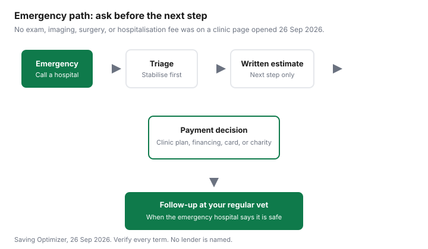

Pets · Canada
Emergency Vet Bills in Canada: What They Cost and How to Pay Without Wrecking Your Budget
An emergency invoice arrives when you have the least time to shop. This page is a Canadian intake checklist and a map of payment types. It does not name a lender, rank a hospital, or tell you which treatment to authorise. That decision is yours with the veterinarian in the room. Figures below are only the ones a page printed, with the date on that page.
Key takeaways
- Line-item emergency fees for an exam, X-rays, surgery, and overnight care were not on a clinic page opened 26 Sep 2026. Do not treat a round number from a forum as a quote.
- The Competition Bureau, 30 Oct 2024, citing Ontario Veterinary Medical Association 2023 estimates, says emergency trips can add $215 to $1,615 per year. Routine adult-dog care in that same citation was about $4,137 a year.
- Ontario SPCA veterinary clinics state they do not treat emergencies or injured animals. They are not the door for tonight.
- Payment types to ask about are a clinic plan, third-party financing, credit, and a charity fund. Verify the terms on the paper in front of you. No lender is recommended here.
- After the animal is stable, move follow-up to your regular veterinarian when the emergency hospital says that is safe, and rebuild cash with a high-interest savings account you can actually access.
Typical emergency costs: exam, imaging, surgery, hospitalization (date-stamped ranges)
The pages opened for this draft do not publish a Canadian fee for an emergency exam, a radiograph, a surgery, or a night in hospital. A research lead in the thousands of dollars was not on those pages, so it is not repeated. What was published is a yearly picture, and it is older than the 2025 sheet used later on this page.
The Competition Bureau’s article “Pets, vets and meds: The case for more competition,” dated 30 Oct 2024, cites the Canadian Veterinary Medical Association for $9.3 billion spent on veterinary services in Canada in 2023, and the Canadian Animal Health Institute for 60 percent of households owning at least one cat or dog, about 8.5 million cats and 7.9 million dogs. On the household line, the Bureau cites Ontario Veterinary Medical Association 2023 estimates: about $5,200 a year for a puppy, about $4,137 for an adult dog, as high as $3,540 for a kitten, and $2,849 for an adult cat. Annual check-ups in that citation account for $85 to $130. Emergency trips, the Bureau says, can cost an additional $215 to $1,615 per year. Read that as a provincial estimate of a year’s emergency spending, not as the price of one night. Costs may vary. The Bureau also notes a veterinarian shortage and limited competition as part of why prices are high. That is context. It is not your estimate.
A newer Ontario Veterinary Medical Association canine sheet, the 2025 cost-of-care PDF, does not print an emergency line. It prints a provincial average for an adult dog of $5,118 a year, including parasite prevention $238, exams with vaccines $214, a heartworm/Lyme test $125, fecal exams $66, a wellness blood profile $174, and professional dental care $1,320. Food is $1,418. A pet-insurance line is starred at $1,402 and described as an estimate that depends on the pet, the policy, and other choices. The puppy total on that PDF is $5,493 or $5,595, depending on the neuter figure of $1,016 or the spay figure of $1,118. Use the 2025 sheet for routine planning. Use the 2023 emergency range only as the Bureau quoted it. Neither sheet is the hospital’s quote tonight.
The Atlantic Veterinary College teaching hospital in Prince Edward Island does publish how to reach an emergency: small-animal emergencies can call 902-566-0950 between 8 a.m. and 11 p.m., seven days a week. The page opened 26 Sep 2026 did not print a fee. The Ontario SPCA veterinary page says its five clinics do not have the capacity to provide emergency care or treat injured or sick animals. If you are in front of a true emergency, the SPCA wellness clinic is the wrong door. Call an emergency hospital and ask for an estimate.
Deposit policies and what to ask at intake
Deposit rules are hospital rules. None of the emergency hospitals checked for this draft printed a standard deposit percent. The Ontario SPCA does require a deposit when you book its non-emergency wellness and spay services, with credit card by phone or debit, credit, or cash in person. Cancellations seven or more days ahead are eligible for a full refund of that booking deposit. Later cancellations are refunded less a fee: $100 for spay and neuter, $25 for basic veterinary care. That is a scheduled-clinic policy. Do not assume an emergency hospital uses the same clock.
At emergency intake, the useful questions are short. What is the estimate for the next step, not for every possible surgery. What must be paid before they start. Whether a deposit is applied to the final invoice. Whether they can stabilise and transfer to your regular veterinarian. Whether an itemised estimate will be updated before extractions, imaging, or an overnight stay are added. Write the answers down. A verbal “it depends” is true and still not a number you can budget.
| Ask | Why it is on the list | What to write down |
|---|---|---|
| Estimate for the next step | A full surgery quote and a stabilising exam are different bills. | The dollar figure, what it includes, and the time it covers. |
| Deposit | Some hospitals collect money before treatment. The amount was not on a page opened here. | Amount due now, whether it is applied to the invoice, and the refund rule. |
| Payment options tonight | A clinic plan, third-party financing, and a card are different contracts. | Which ones this hospital offers, and the paper you would sign. |
| Stabilise first | Pain control, fluids, or a bandage may be separable from a definitive surgery. | What “stable enough to transfer” means for this animal. |
| Transfer to your regular veterinarian | Follow-up at a clinic that already has the file is often the cheaper setting once the crisis has paused. | Records they will send, and any recheck the emergency hospital still wants. |
Payment options: vet financing, payment plans, credit (verify terms)
Four types show up in Canadian conversations. A clinic payment plan is an agreement with that hospital. Third-party financing is a loan from a company that is not the hospital. A credit card is revolving credit you already have, or a new card you should not open in the parking lot without reading the rate. A charity fund is help that may be partial, slow, or limited to a province. This page does not name a financing company and does not say one of these is the right product. The Competition Bureau’s 30 Oct 2024 article is about who may sell pet medication, not about loan terms. Do not borrow its medication findings and treat them as a financing recommendation.
| Type | What it is | What to verify |
|---|---|---|
| Clinic plan | The hospital lets you pay them over time. | Number of payments, any admin fee, what happens if you miss one, and whether the animal’s records are held. |
| Third-party financing | A separate company pays the hospital and you repay the company. | Interest, deferred-interest traps, the total you will pay, and the credit check. No company is named here. |
| Credit card | You put the invoice on a card and pay the card issuer. | The rate if you do not clear the statement, and whether a cash advance is involved. A card is not a discount. |
| Charity fund | A humane society or a foundation may pay part of a bill for people who qualify. | Province, income proof, whether emergency care is included, and how fast a decision is made. See the next section. |
If the invoice becomes a balance you are already carrying, the household debt plan is the worksheet, and the debt-or-TFSA guide is the question about the next dollar. Neither guide is a reason to skip pain relief the veterinarian says the animal needs tonight.

Charities and humane society funds
Two Ontario routes were open on 26 Sep 2026. The Ontario SPCA financial-assistance information form asks you to complete it if you need help. The page says staff will contact you to discuss options. If you are booking a spay or neuter, it points you to the spay registration and a “request for financial assistance” checkbox. The form page reprints 2026 surgery fees. It does not print a maximum grant. The veterinary clinics themselves do not treat emergencies, so this form is not a same-night emergency desk.
The Farley Foundation’s site says it subsidises veterinary care for low-income Ontario families and works with vet clinics from Windsor to Ottawa and beyond. A pet-owner story on the homepage describes help with an ultrasound. The pages opened did not print an income cutoff, a list of covered procedures, or a dollar cap. Ask the clinic whether it participates, and read the foundation’s own instructions. Funds in other provinces were not opened for this draft. The low-cost care guide lists the scheduled clinics and teaching hospitals that were verified. They are the follow-up path, after an emergency hospital has said the animal can leave.
Insurance claims timing
No pet-insurance certificate was opened for this draft, so no claim window, waiting period, or dental exclusion is invented here. If you have a policy, the clock is the one in that certificate: when you must call, what records the insurer wants, and whether a pre-approval is required before a non-emergency follow-up. Ask the hospital for an itemised invoice and the medical notes the same day. A missing record is a common reason a later claim stalls. Household claim appeals are a different product. The claim-appeal guide is a method for reading a denial letter. It is not a pet-policy term.
The 2025 Ontario Veterinary Medical Association sheet stars pet insurance at $1,402 and says the cost depends on the pet, the policy, and other coverage choices. That is an estimate of premium, not proof that a policy will pay an emergency. Read the exclusions before you count on it. This page does not compare insurers.
Building an emergency fund afterwards
Once the animal is home, the bill is a household cash problem. A sinking fund is a named pot you fill on purpose. The sinking-fund guide shows the monthly habit for property tax and insurance. The same habit works for a vet pot: pick a target you can explain, divide by the months you have, and move the money the day you are paid.
A target you can cite, not a target this page orders you to save, is the 2025 provincial average of $5,118 for an adult dog, or the narrower 2023 emergency add-on of $215 to $1,615 a year quoted by the Competition Bureau. Those are averages. Your city and your animal will differ. The place to hold the cash is covered in the emergency-fund parking guide: a savings account you can transfer from, with deposit insurance understood, and without locking the money into a term you cannot break on a Sunday night. If the invoice is already on a card, paying that balance comes before adding to a TFSA. Confirm the order with the debt guide, not with a slogan.
Sources & date stamps
- Competition Bureau, “Pets, vets and meds: The case for more competition,” 30 Oct 2024. Veterinary services $9.3 billion in 2023. CAHI household and population figures. OVMA 2023 annual estimates, including emergency trips of an additional $215 to $1,615 per year. Opened 26 Sep 2026.
- Ontario Veterinary Medical Association, annual cost of owning a dog and a puppy, 2025 PDF. Adult dog total $5,118. No emergency line on that PDF. Insurance line starred as an estimate.
- Ontario SPCA veterinary services and financial-assistance form, 2026 fee tables and the statement that the clinics do not provide emergency care. Opened 26 Sep 2026.
- Atlantic Veterinary College Veterinary Teaching Hospital: small-animal emergencies, 902-566-0950, 8 a.m. to 11 p.m., seven days. No fee printed. Opened 26 Sep 2026.
- Farley Foundation homepage: subsidises care for low-income Ontario families and works with clinics. No income cutoff or grant cap on the pages opened 26 Sep 2026.
Frequently asked questions
How much does an emergency vet visit cost in Canada?
A single exam, imaging, surgery, and hospitalisation price list was not on a clinic page opened for this draft. The Competition Bureau’s 30 Oct 2024 article, citing the Ontario Veterinary Medical Association’s 2023 cost-of-care estimates, says emergency trips can add $215 to $1,615 per year on top of routine costs. That is a yearly range for Ontario estimates, not a quote for tonight’s invoice. Ask the hospital for a written estimate before you agree to the next stage.
Do emergency vets require a deposit?
No national deposit rule was opened. The Ontario SPCA’s own clinics, which state they do not provide emergency care, require a deposit to book wellness and spay appointments. That policy is not an emergency-hospital rule. At an emergency intake, ask what must be paid before treatment, whether the deposit is applied to the final bill, and what happens if you transfer to your regular veterinarian.
Can I get a payment plan?
Some hospitals offer a clinic plan, some offer third-party financing, and some accept a credit card. This page does not name a lender and does not say you will be approved. Ask which option the hospital actually offers tonight, what the interest and fees are, and whether a smaller stabilising plan exists. Read the agreement before you sign. A plan that you cannot pay is another bill.
Are there charities that help with vet bills?
The Ontario SPCA publishes a financial-assistance information form and says it will contact you about options. It does not print a dollar cap on that form. The Farley Foundation says it subsidises veterinary care for low-income Ontario families and works with clinics. No income cutoff was on the pages opened 26 Sep 2026. Apply through the organisation’s own page, and do not assume a fund will cover an emergency the same night.
How do I avoid this next time?
You cannot insure away every accident, and you cannot schedule an emergency. You can keep a named cash buffer and a regular veterinarian who already knows the animal. The Ontario Veterinary Medical Association’s 2025 canine sheet puts a provincial-average adult dog at $5,118 a year before you decide what portion should sit in cash. Park that cash where you can reach it, using the emergency-fund guide, and confirm any insurance claim window on your own certificate.